Account
Approved application · approved logoEvery image below is an actual canonical PNG. Open an image for its full resolution. These are authored design scenes, not current-app browser captures.
Your account
profileActions and implementation pointers
+ New page · Journal · Explore · All pages · ⌄ · Reflections · › · Reading · Profile · Security · Appearance · Upload avatar · Remove avatar · Save profile · Ask Journl · Today’s Journal · Close · Instant · Thinking
apps/web/src/components/auth/settings/account/user-profile.tsxapps/web/src/components/auth/settings/security/security-settings.tsxapps/web/src/components/auth/settings/security/active-sessions.tsx

SHA256 568028c7909498396ca4cb36a378e90b07c4c796978d35a05bfc71b0fec93fe6

SHA256 facc1c93828242823ab27ac9c681e5bdeec7af4509872b113c2d46ec771f6f93

SHA256 c06bed216e3c5b3e7d636eb57fc6043434ec49ba999dcc1fe5ee46e792f8c74b

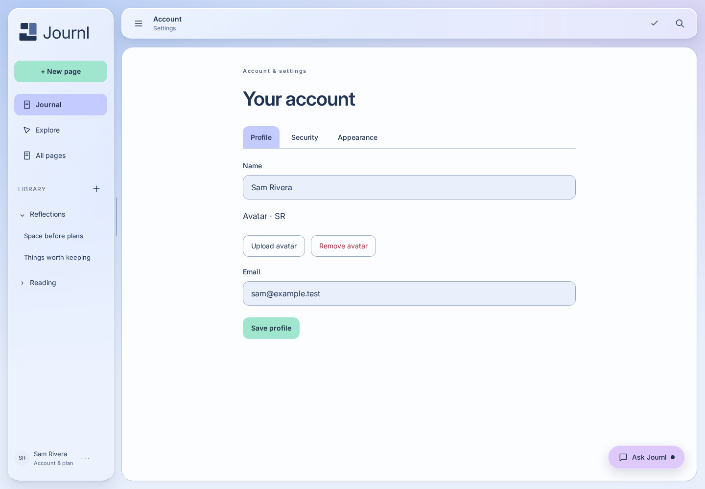
SHA256 6b0ba62a80d29dd329be29779fd9a144da9cc072132ad479fc5c809201664010

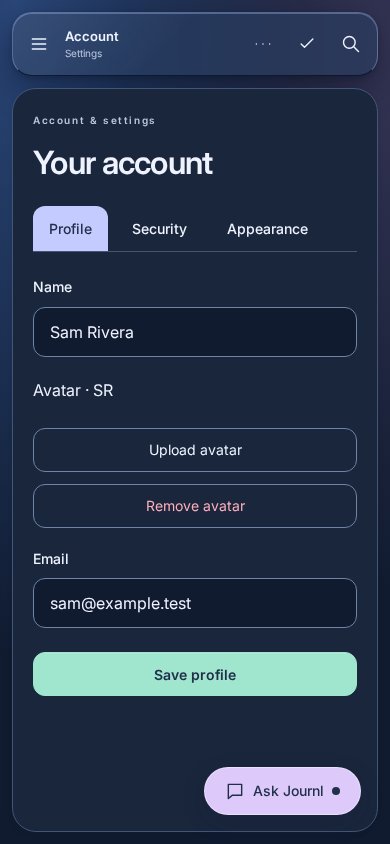
SHA256 2cbfbe325701c963e8322b1532478e5566b7762c62ff83f63c688d23fb46bb0c

SHA256 daeb69fc5e3813855b38d33e704402f448d538e58020092d224467fa30271824
Security
securityActions and implementation pointers
+ New page · Journal · Explore · All pages · ⌄ · Reflections · › · Reading · Profile · Security · Appearance · Unlink · Link · Sign out other devices · Sign out everywhere · Ask Journl · Today’s Journal · Close · Instant · Thinking
apps/web/src/components/auth/settings/account/user-profile.tsxapps/web/src/components/auth/settings/security/security-settings.tsxapps/web/src/components/auth/settings/security/active-sessions.tsx

SHA256 a67cece83544a8b59b429c9415b444138fa42c6c41bef9d5b78b0066e34ad812

SHA256 ca8c07e12708e7e527d1124434761b484342c50a57bd8ff60520c2886a8ea39f

SHA256 f6e1577bb7bc92eed5d966c383bd7acf0a7a0657280263cd4016829cc7c75abf

SHA256 d31e469900cc63c43bafed03d590db4f99a521e457a9eaaf0bfe889277fbfc33
Make it comfortable
appearanceActions and implementation pointers
+ New page · Journal · Explore · All pages · ⌄ · Reflections · › · Reading · Profile · Security · Appearance · System — follow device · Light · Mist + Teal · Dark · Midnight + Aqua · Ask Journl · Today’s Journal · Close · Instant · Thinking
apps/web/src/components/auth/settings/account/user-profile.tsxapps/web/src/components/auth/settings/security/security-settings.tsxapps/web/src/components/auth/settings/security/active-sessions.tsx

SHA256 2ead564c4f193549905b1a7e610dcc7cf68e672b183ea33d03e555c2636c241d

SHA256 64f33bafec7b91ff219c15ba68ee3a8a408fe04246ae3150b8137bcad5448e74

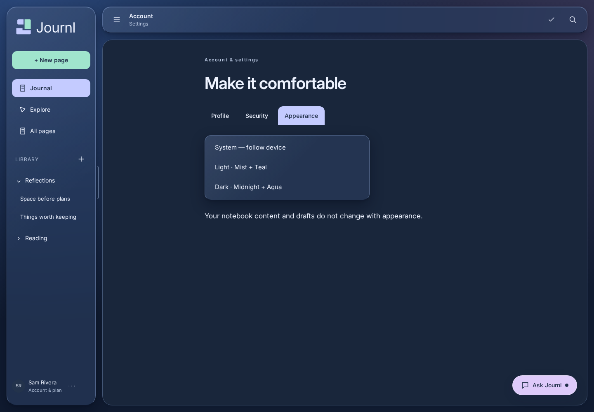
SHA256 be2dced21eb079bfcadb064c7d27e741c2b128d943487b57c1b8e1284e7b4d3d

SHA256 e90e0503302448fca6e9b746bc8e2b2ccf0e3e0e14ffa3af072cabf763b0862c
Sam Rivera
user-menuActions and implementation pointers
× · Settings · Account & plan · Appearance · System · Light · Dark · Sign out
apps/web/src/components/auth/settings/account/user-profile.tsxapps/web/src/components/auth/settings/security/security-settings.tsxapps/web/src/components/auth/settings/security/active-sessions.tsx

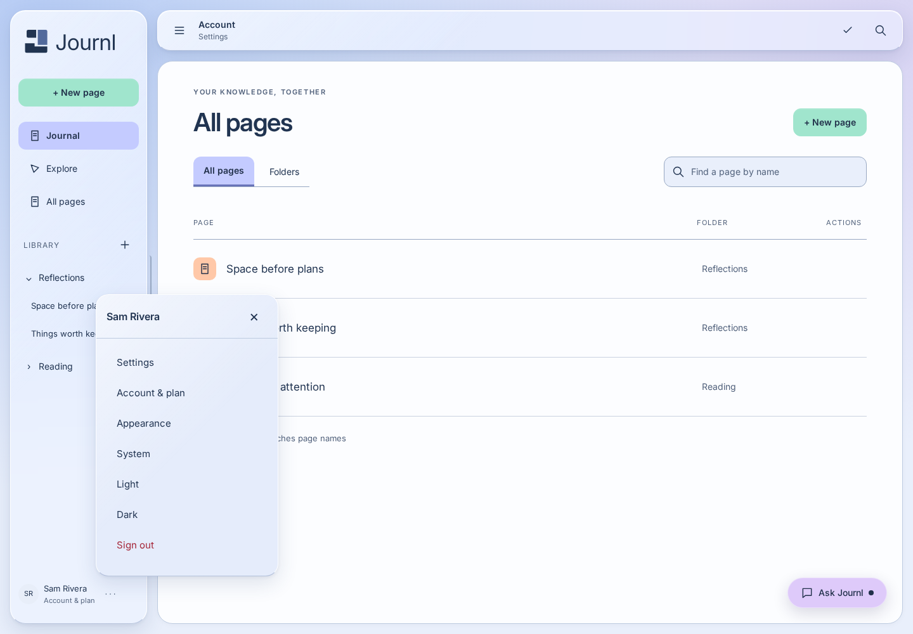
SHA256 32c4ea82762c9ed1d57e6d7dc6a7bd297ff9278893016a307ec036bdd4d45fb1

SHA256 f6566761bd4802dc6a4a87d69e879f7d4a59483d7013d58720153a8c9ddd767f

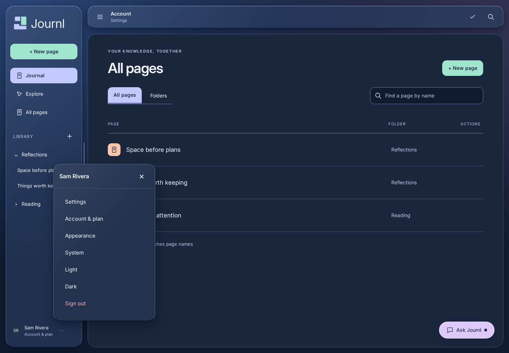
SHA256 256c144d8a695d900a5544a42e6aec60ab7f3d8daf67223315432d48cfe3caf5

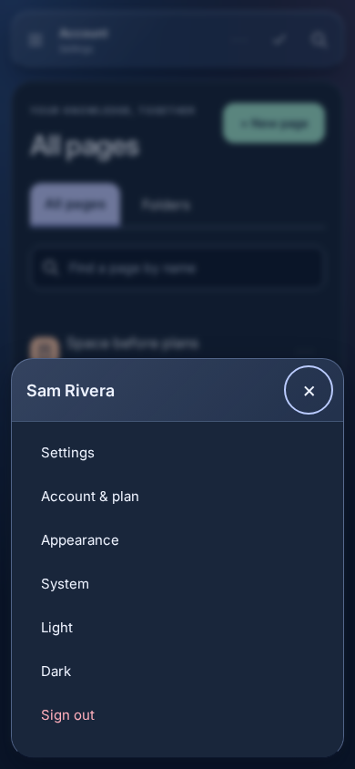
SHA256 a42b224b57c1fa27099e46e0193d52d857cd6219b33990a4182d7c11cb27805f
Profile name · ready
profile-name-readyActions and implementation pointers
+ New page · Journal · Explore · All pages · ⌄ · Reflections · › · Reading · Cancel · Save name · Ask Journl · Today’s Journal · Close · Instant · Thinking
apps/web/src/components/auth/settings/account/user-profile.tsxapps/web/src/components/auth/settings/security/security-settings.tsxapps/web/src/components/auth/settings/security/active-sessions.tsx

SHA256 68e703150d8e7a603184c37ed45766afee060f110e4a2f95369acb0d9c13a46d

SHA256 d430c5fd3190e1327eb1ee54f34d0151d8246eeef1da69b98166e972ca7cf299

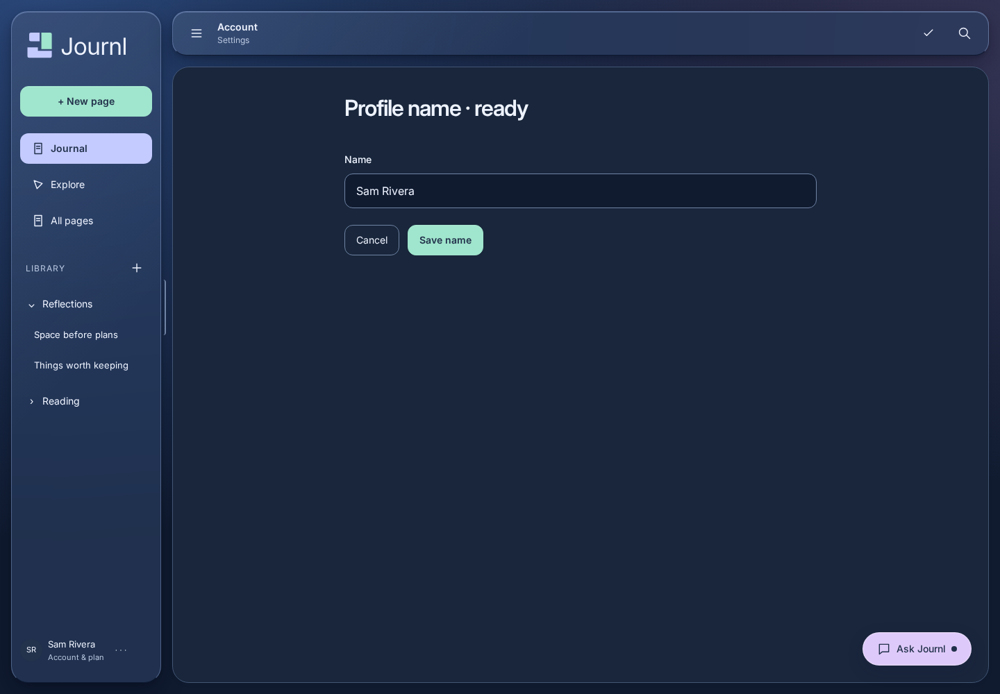
SHA256 b19f3eb3294316f1cf8004214f84ff5e412f32e7fd32d2e5034eafa6ec8d00a9

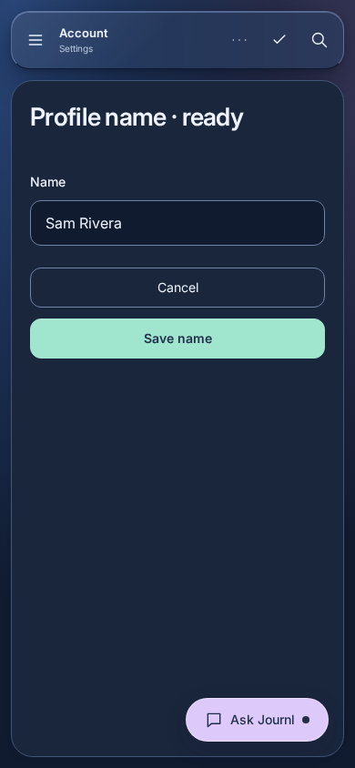
SHA256 6db8d1b1e45d45cc586d8ccb5e4f323ba92121f65ebf139932485523e0220afc
Profile name · pending
profile-name-pendingActions and implementation pointers
+ New page · Journal · Explore · All pages · ⌄ · Reflections · › · Reading · Save name… · Cancel · Ask Journl · Today’s Journal · Close · Instant · Thinking
apps/web/src/components/auth/settings/account/user-profile.tsxapps/web/src/components/auth/settings/security/security-settings.tsxapps/web/src/components/auth/settings/security/active-sessions.tsx

SHA256 1a27a15535141afb343d0f5c7674db3a174c40e036eb735fa8283f4f8e5a18e4

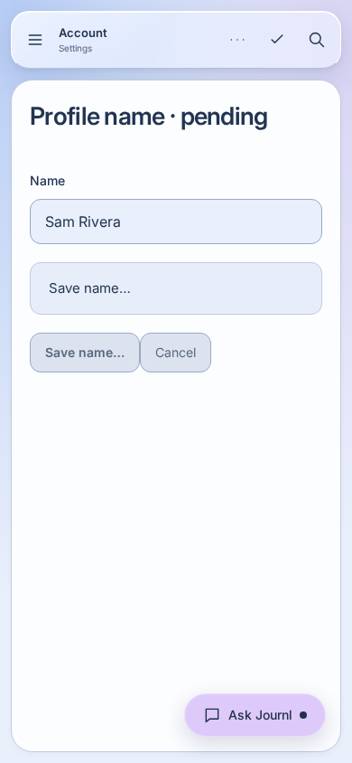
SHA256 cccab60ec6b1e4993f13eedb54470ef6944df791119c3eb19da42ce1b04862b7

SHA256 05a60a79587adb1f73a3ddce4051185601ff427489923aec3965aa849c96d8bd

SHA256 4b9177269ae4da7e6ee7ffd81db75ba03f5bcf2d3a72747f66a043e626b38ad8
Profile name · error
profile-name-errorActions and implementation pointers
+ New page · Journal · Explore · All pages · ⌄ · Reflections · › · Reading · Cancel · Save name · Ask Journl · Today’s Journal · Close · Instant · Thinking
apps/web/src/components/auth/settings/account/user-profile.tsxapps/web/src/components/auth/settings/security/security-settings.tsxapps/web/src/components/auth/settings/security/active-sessions.tsx

SHA256 4124efd638346523b8a48b744bb9c7f4281a7318d504334b89b4874840582b38

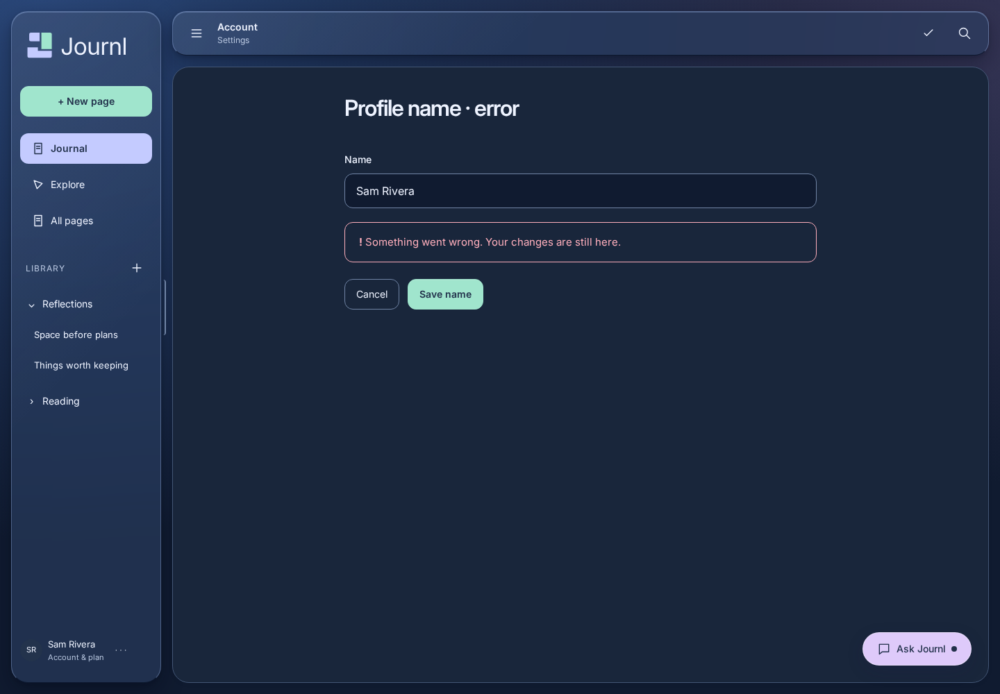
SHA256 ed67c093d55282b1ff0a7bf219ac4e8bd4c26ffd8406f3898569b6d780733474

SHA256 755917ff90604bf0501b8baaca3ff42c8e687804111ccf648f1741a43f42230d

SHA256 51cf0421fd21b1669edf88c309a542fa8bbba3408d75ec5c7920a53591223130
Profile name · success
profile-name-successActions and implementation pointers
+ New page · Journal · Explore · All pages · ⌄ · Reflections · › · Reading · Done · Ask Journl · Today’s Journal · Close · Instant · Thinking
apps/web/src/components/auth/settings/account/user-profile.tsxapps/web/src/components/auth/settings/security/security-settings.tsxapps/web/src/components/auth/settings/security/active-sessions.tsx

SHA256 cd56a1011e25ac0e47eb4c775d686a9ab58fb5d2eff3d32e7f51d9413d740794

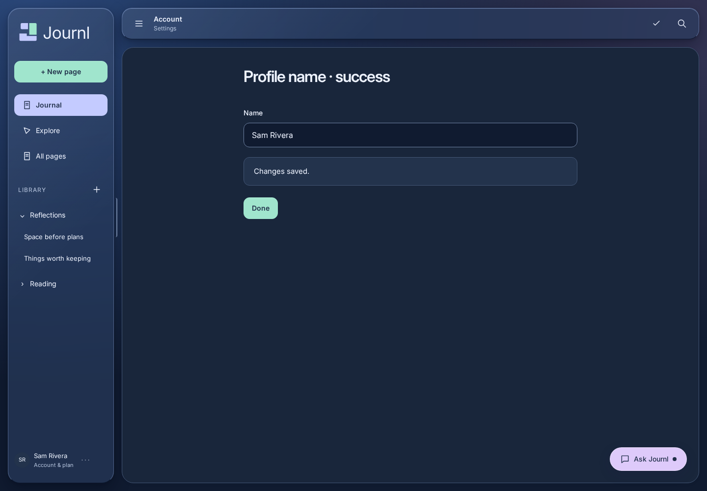
SHA256 f244981f1fe993bfd761c163ea91058c7cac82f4af2658019854c06c0f231827

SHA256 549e77976ace66971cfed539b5be76a3a7529ad7a54a3f5028eed4c4125aa232

SHA256 b29369d3fc392d1d0419fed457dacdd7db815112b8d9753ef186f56c4ae854c3
Name required
profile-invalidActions and implementation pointers
+ New page · Journal · Explore · All pages · ⌄ · Reflections · › · Reading · Save name · Ask Journl · Today’s Journal · Close · Instant · Thinking
apps/web/src/components/auth/settings/account/user-profile.tsxapps/web/src/components/auth/settings/security/security-settings.tsxapps/web/src/components/auth/settings/security/active-sessions.tsx

SHA256 7dc51ad92cafd1756dceaf16ad9cca0774891b4b9ca45d186e8974c87cea2671

SHA256 a13feaf06e3a5ff119aab1b19503977832e6ed76428ce3053ffc3d2a6cbae5c0

SHA256 36c9812c352784bc2818345d7076293102bd8270ab9534dccd60f2fa83793938

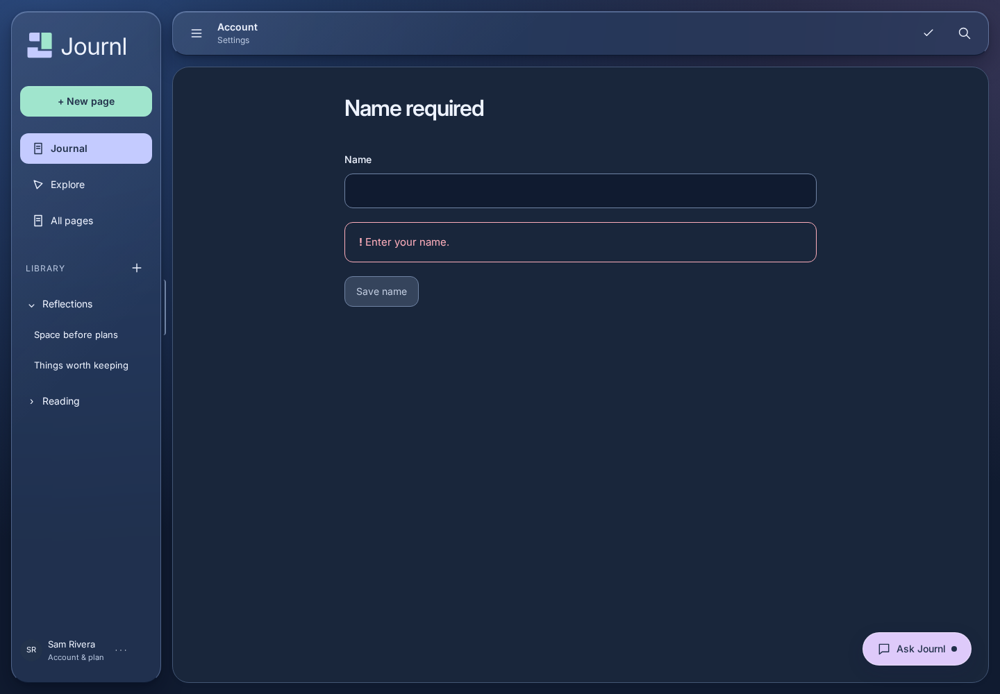
SHA256 cf9c6b29d416f905c283481e9c56f06fc4b800395c8ff57f3564ea545a817dc3
Avatar · choose
avatar-chooseActions and implementation pointers
× · Upload avatar · Remove avatar
apps/web/src/components/auth/settings/account/user-profile.tsxapps/web/src/components/auth/settings/security/security-settings.tsxapps/web/src/components/auth/settings/security/active-sessions.tsxapps/web/src/components/auth/settings/account/change-avatar.tsx
SHA256 f5b6fb51cc4effb9f5af34925892314dc3929ce32ae79a5e6f92df4f1dbbdb81
SHA256 d9e5a90a9f0ab379def8718c76b6a8665097eca3860fdb4ea6087fb099680904
SHA256 17e2c40be69de315066742e709a3660fdb5a0caa6ff32f8728f62189ebedbaa4

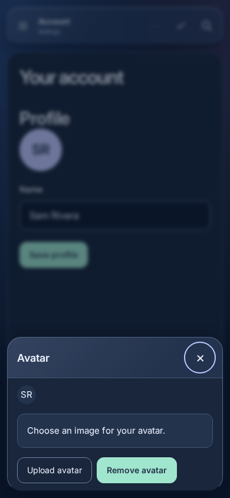
SHA256 05fe31958109fea6ecf354d266cecfcac74e5a8e102a2f0078f47ff5e4a367a2